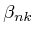
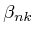
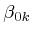

Assume that the input field to an optical fiber is a wavelength division
multiplexing (WDM) comb of channels. Such global, or unique,
field has lowpass envelope  at coordinate
at coordinate  and time
and time  .
Calling
the central bandpass frequency of this electric
field, it is possible to express the unique field as:
.
Calling
the central bandpass frequency of this electric
field, it is possible to express the unique field as:
where is the lowpass envelope of channel while is the difference between the central frequency of channel and the central frequency of the WDM comb. We want to derive a propagation equation for for . To this aim we start from the NLSE (3.7) written in the frequency domain:
where
is the Fourier transform of  ,
and all parameters are evaluated at the bandpass frequency
.
Let us first investigate the linear part of (3.12).
From the superposition principle we have:
,
and all parameters are evaluated at the bandpass frequency
.
Let us first investigate the linear part of (3.12).
From the superposition principle we have:
The nonlinear part of (3.12) is more easy to manage in the time domain yielding:
where
can range from to but must satisfy
. The substitution of
for  in (3.15)
follows the same steps as done for
 in the linear equation
(3.13), but since
in (3.15)
follows the same steps as done for
 in the linear equation
(3.13), but since  is slowly varying with
is slowly varying with
 (see 3.5) we set
constant
over the bandwidth of
.
(see 3.5) we set
constant
over the bandwidth of
.
The solution of (3.15) does not coincide with the
solution of (3.14) since in (3.15)
we discarded all terms of the sum falling outside the bandwidth of
 , i.e. all
such that
cannot be associated to a frequency
,
of the comb. However, such terms are usually of small energy for weakly
nonlinear systems, hence the solution of (3.15)
is of great interest. It turns out that we are investigating a system
of differential equations (3.15) behaving as a
closed system.
, i.e. all
such that
cannot be associated to a frequency
,
of the comb. However, such terms are usually of small energy for weakly
nonlinear systems, hence the solution of (3.15)
is of great interest. It turns out that we are investigating a system
of differential equations (3.15) behaving as a
closed system.
We are now in position to merge the linear (3.13) and the nonlinear (3.15) differential equations together. After inserting  into a constant phase shift as , the NLSE, which we call the NLSE for separate fields, in the time domain writes as:
where is called the phase matching coefficient. By varying the indexes we can identify the following terms:

Note that may differ from zero even if because of the FWM process due to the other terms. If we further assume that such terms remains undepleted in the resulting FWM over is called first order FWM. See [1] for an introduction to FWM and [41,42] for advanced studies of FWM.
Also note that in absence of FWM the solution of (3.15) coincides with the solution of (3.14) since XPM and SPM alone cannot generate if .
Solving the NLSE for corresponds to solve the NLSE for a
unique field. Solving the NLSE for
,
 corresponds to solve the NLSE for separate fields. Such options
must be indicated in create_field. The
unique field solution is the most complete one, since it correctly
includes SPM, XPM and FWM. The solution for separate fields is possible
in a simple and numerically efficient form only in absence of FWM,
for which a closed form expression of the solution in presence of
the nonlinear operator only exists. In such a case the NLSE (3.16)
for channel is:
corresponds to solve the NLSE for separate fields. Such options
must be indicated in create_field. The
unique field solution is the most complete one, since it correctly
includes SPM, XPM and FWM. The solution for separate fields is possible
in a simple and numerically efficient form only in absence of FWM,
for which a closed form expression of the solution in presence of
the nonlinear operator only exists. In such a case the NLSE (3.16)
for channel is:
where for the sake of simplicity we assumed and , . The solution in the retarded frame time is:
being the walkoff parameter (3.2). A parallel SSFM algorithm applied to each channel is therefore possible. Note that the nonlinear phase rotation due to XPM is in principle two times as larger than the one of SPM. However, XPM is reduced by the filtering effect of the walk-off effect [1].
The main motivations for using a separate field approach are the following:
Optilux toolbox reference manual